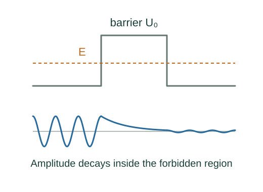

Why tunnelling probability decays exponentially
Where a particle’s energy lies below the potential, the stationary matter wave is exponential rather than sinusoidal. Matching it through a finite barrier leaves a transmitted wave.
What the symbols mean
U₀: rectangular barrier height; E < U₀: incoming energy; a: barrier width; κ: decay constant; T: transmission probability.
When this applies
One-dimensional stationary nonrelativistic scattering by a rectangular barrier, with the same constant potential on the two exterior sides. The exponential scaling is the thick-barrier limit.
Developing the argument

Use the Schrödinger equation inside the barrier
Rearrange the stationary equation with U = U₀. Because U₀ − E is positive, the second derivative has the same sign as ψ.
Solve the constant-coefficient equation
Functions e±κx have second derivative κ² times themselves. Both terms are needed inside a finite barrier when matching boundaries.
Match both boundaries
Continuity of ψ and ψ′ for a finite step relates incoming, reflected, internal and transmitted waves. This matching produces a nonzero transmitted amplitude.
Extract the thick-barrier limit
For κa much greater than one, sinh²(κa) ≈ e²κa/4. The dominant width dependence is therefore e⁻²κa; the squared exponent comes from probability rather than amplitude.
A worked example
For an electron 1 eV below the top of a barrier, κ is about 5.12 nm⁻¹. Increasing width by 0.10 nm multiplies thick-barrier transmission by about e⁻¹·⁰²⁴ ≈ 0.36.
Derivation behind this calculation ↗A point to keep straight
T = e⁻²κa alone omits the matching prefactor. Tunnelling does not mean the particle acquires enough classical energy to cross the barrier.
Check the assumptions and derivation ↗